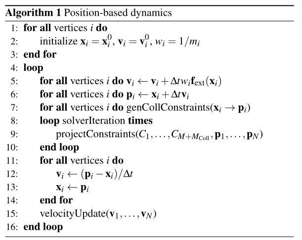
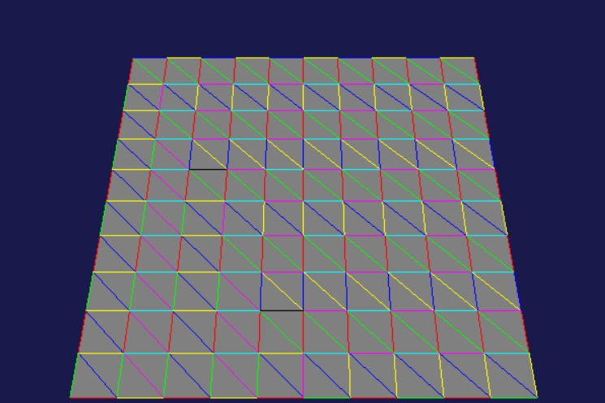

I follow the basic PBD algorithm [1].

For a distance constraint between adjacent vertices $C(\mathbf x_1,\mathbf x_2) = |\mathbf x_1 - \mathbf x_2| - d = 0$ corrections are as follows $$\Delta \mathbf x_1 = -\frac{k\cdot w_1}{w_1 + w_2}C(\mathbf x_1,\mathbf x_2)\mathbf n,$$ $$\Delta \mathbf x_2 = \frac{k\cdot w_2}{w_1 + w_2}C(\mathbf x_1,\mathbf x_2)\mathbf n,$$ where $d$ - initial distance, $w_i = 1/m_i$ - inverse masses, $k\in(0,1]$ - stretching factor, $\mathbf n = (\mathbf x_1 - \mathbf x_2)/|\mathbf x_1 - \mathbf x_2|$ - unit vertor pointing from second to first particle.
In order to perform corrections of coordinates on GPU we need to divide mesh edges into several groups with no adjacent edges. In this case different gpu processes would not change the same . This is performed via coloring the edges according to greedy algorithm [2]. The maximum number of colors is $6 + 1=7$ as the maximimum vertex degree is $6$.
